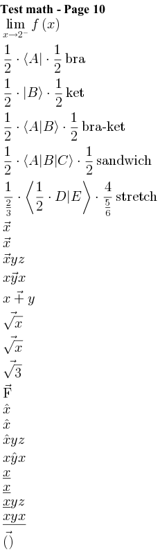

@startcreole math-Page-10
= Test math - Page 10
<math>lim_(x rarr 2^-) f(x)</math>
<math>1/2*(:A:|*1/2 text(bra)</math>
<math>1/2*|:B:)*1/2 text(ket)</math>
<math>1/2*(:A:|:B:)*1/2 text(bra-ket)</math>
<math>1/2*(:A:|:B:|:C:)*1/2 text(sandwich)</math>
<math>1/(2/3)*(:1/2*D:|:E:)*4/(5/6) text(stretch)</math>
<math>vec(x)</math>
<math>vecx</math>
<math>vecxyz</math>
<math>vec(xyx)</math>
<math>vec(x+y)</math>
<math>vec(sqrt(x))</math>
<math>vecsqrtx</math>
<math>vecsqrt3</math>
<math>vec"F"</math>
<math>hat(x)</math>
<math>hatx</math>
<math>hatxyz</math>
<math>hat(xyx)</math>
<math>ul(x)</math>
<math>ulx</math>
<math>ulxyz</math>
<math>ul(xyx)</math>
<math>vec()</math>
@endcreole